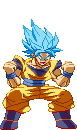
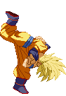
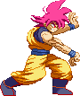

activate Justice Mode (LV2)
Activating Justice Mode makes Goku transform to Super Saiyan Blue and get serious!
As an opponent of SSJ Goku, this is really something you want try to avoid!
A few things change in his gameplay:
- Upon activation, you'll see an empty Justice Bar (fills up blue), and a full buffer bar (orange) added to the screen. - Teleports now don't cost any Power Bar but you can still only use them when you have stock for them.
- You can now do two Teleports within the same combo instead of just one.
- The Justice Bar fills by performing Teleports.
- The buffer bar drains by performing Teleport Attacks.
- If the buffer bar is completely empty, the mode is cancelled.
- In Justice Mode, Goku gains access to the Teleport Attacks (detailed below).
- Ultimate Rush costs LV2 instead of LV3 and cancels the Mode upon activation.
- Depending if you're on LV1, 2 or 3 of the Justice Bar, Goku will perform a Finisher at the end of the Ultimate Rush. LV1 - 1-Inch Punch.
LV2 - See Ya Spirit Bomb.
LV3 - Ultra Instinct.
When Saibamen or Clones are onscreen, Goku will perform a normal Blast Fist at the end of his Hyper Rush combo instead of the usual True Blast Fist, to avoid bugs that might otherwise occur against these characters.
- Upon activation, you'll see an empty Justice Bar (fills up blue), and a full buffer bar (orange) added to the screen. - Teleports now don't cost any Power Bar but you can still only use them when you have stock for them.
- You can now do two Teleports within the same combo instead of just one.
- The Justice Bar fills by performing Teleports.
- The buffer bar drains by performing Teleport Attacks.
- If the buffer bar is completely empty, the mode is cancelled.
- In Justice Mode, Goku gains access to the Teleport Attacks (detailed below).
- Ultimate Rush costs LV2 instead of LV3 and cancels the Mode upon activation.
- Depending if you're on LV1, 2 or 3 of the Justice Bar, Goku will perform a Finisher at the end of the Ultimate Rush. LV1 - 1-Inch Punch.
LV2 - See Ya Spirit Bomb.
LV3 - Ultra Instinct.
When Saibamen or Clones are onscreen, Goku will perform a normal Blast Fist at the end of his Hyper Rush combo instead of the usual True Blast Fist, to avoid bugs that might otherwise occur against these characters.



Teleport Attacks / Pursue Attacks
These attacks are basically free teleport attacks like Normal Goku's Bicycle Kick;
Goku teleports right beside the opponent and then hits them with a hard-hitting aerial attack.
Forward/Backward version performs the Smash Punch, the up version a Flash Kick and the down version a Bicycle Kick,
and upon impact the opponent is knocked into that direction.
You perform two of these within the same combo.
Beware; they don't require a stock from your Teleport Stock Bar, they fill your Justice Bar BUT they also drain the buffer bar. Using any Teleport Attacks means you won't be able to reach LV3 of the Justice Mode before it's cancelled out.
Beware; they don't require a stock from your Teleport Stock Bar, they fill your Justice Bar BUT they also drain the buffer bar. Using any Teleport Attacks means you won't be able to reach LV3 of the Justice Mode before it's cancelled out.

God Bind
SSJ Goku gains a 'Power Mode Exit' move and his is the God Bind,
a move he was seen using once in the DBS: Broly movie.
Our version acts as a grab; he swiftly transforms to his SSJ God form and an energy ring expands from his hands.
This energy ring acts as the 'grab'. If the opponent is hit by the ring, they are locked in place
and Goku charges up with firey God ki, then dashes forward and attacks them with an energy blast.
The higher level of Justice Mode you're at, the larger the ring and thus the grabbing radius will be.
Also, you are required to be at least on Justice Mode Level 1 in order to use this.